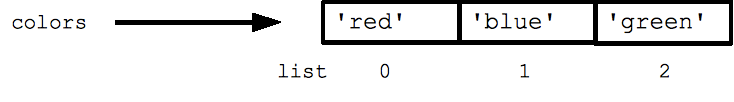
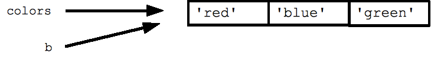
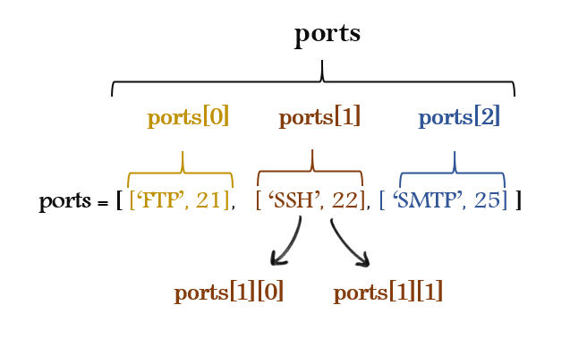

Basic data structures
Python - Lists
- Syntax: my_list = [item0, item1,item2]
- Collection of elements of any data type.
- Lists are mutable (Can be changed even after creation).
- Python provides numerous methods on lists. Just dir(list_name) to get a list of all the methods available.
- Indexing & Slicing mechanism is consistent with strings.
- Lists have very useful methods to manipulate them such as append, count, extend, index, insert, pop, remove, reverse,sort.
colors = ['red', 'blue', 'green']
print colors[0] ## red
print colors[2] ## green
print len(colors) ## 3

Assignment with an = on lists does not make a copy. Instead, assignment makes the two variables point to the one list in memory.

List of lists or sublists
Lists can have sublists as elements. These sublists may contain sublists as well, i.e. lists can be recursively constructed by sublist structures.

>>> employee_details = [('Mark','22489'),('Steph','88153'),('Ajay','99112')]
>>>
>>> for i in xrange(len(employee_details)):
... print employee_details[i][0], employee_details[i][1]
...
Mark 22489
Steph 88153
Ajay 99112
Tuples
- Syntax my_tuple = (val0, val1)
- A tuple is a fixed size grouping of elements.
- Tuples are like lists but are immutable and do not change size (tuples are not strictly immutable since one of the contained elements could be mutable).
- Tuples have no other methods other than builtin’s
- Tuples are faster than lists.
- Tuples are immutable so they protect from data being changed.
- Tuples can be used as keys in a dictionary.
tuple = (1, 2, 'hi')
print len(tuple) ## 3
print tuple[2] ## hi
tuple[2] = 'bye' ## NO, tuples cannot be changed
tuple = (1, 2, 'bye') ## this works
Dictionaries
- syntax: dict = {key1:value1, key2:value2, … }
- Python’s efficient key/value hash table structure is called a “dict”.
- Dictionaries are unordered key-value pairs.
- Dictionaries don’t support the sequence operation unlike lists, tuples or strigs so mechanisms like slicing are not possibl.
- Dictionaries are accessed via keys and not via their position.
- The contents of a dict can be written as a series of key:value pairs within braces { }.
- Looking up or setting a value in a dict uses square brackets, e.g. dict[‘foo’] looks up the value under the key ‘foo’.
- Strings, numbers, and tuples work as keys, and any type can be a value.
## Can build up a dict by starting with the the empty dict {}
## and storing key/value pairs into the dict like this:
## dict[key] = value-for-that-key
dict = {}
dict['a'] = 'alpha'
dict['g'] = 'gamma'
dict['o'] = 'omega'
print dict ## {'a': 'alpha', 'o': 'omega', 'g': 'gamma'}
print dict['a'] ## Simple lookup, returns 'alpha'
dict['a'] = 6 ## Put new key/value into dict
'a' in dict ## True
## print dict['z'] ## Throws KeyError
if 'z' in dict: print dict['z'] ## Avoid KeyError
print dict.get('z') ## None (instead of KeyError)

Iterating over a Dictionary
No method is needed to iterate over a dictionary:
for key in d:
print key
But it’s possible to use the method iterkeys():
for key in d.iterkeys():
print key
The method itervalues() is a convenient way for iterating directly over the
values:
for val in d.itervalues():
print val
The above loop is of course equivalent to the following one:
for key in d:
print d[key]
A for loop on a dictionary iterates over its keys by default. The keys will appear in an arbitrary order. The methods dict.keys() and dict.values() return lists of the keys or values explicitly. There’s also an items() which returns a list of (key, value) tuples, which is the most efficient way to examine all the key value data in the dictionary. All of these lists can be passed to the sorted() function.
## By default, iterating over a dict iterates over its keys.
## Note that the keys are in a random order.
for key in dict: print key
## prints a g o
## Exactly the same as above
for key in dict.keys(): print key
## Get the .keys() list:
print dict.keys() ## ['a', 'o', 'g']
## Likewise, there's a .values() list of values
print dict.values() ## ['alpha', 'omega', 'gamma']
## Common case -- loop over the keys in sorted order,
## accessing each key/value
for key in sorted(dict.keys()):
print key, dict[key]
## .items() is the dict expressed as (key, value) tuples
print dict.items() ## [('a', 'alpha'), ('o', 'omega'), ('g', 'gamma')]
## This loop syntax accesses the whole dict by looping
## over the .items() tuple list, accessing one (key, value)
## pair on each iteration.
for k, v in dict.items(): print k, '>', v
## a > alpha o > omega g > gamma
There are “iter” variants of these methods called iterkeys(), itervalues() and iteritems() which avoid the cost of constructing the whole list – a performance win if the data is huge. However, I generally prefer the plain keys() and values() methods with their sensible names. In Python 3000 revision, the need for the iterkeys() variants is going away.
Strategy note: from a performance point of view, the dictionary is one of your greatest tools, and you should use where you can as an easy way to organize data. For example, you might read a log file where each line begins with an ip address, and store the data into a dict using the ip address as the key, and the list of lines where it appears as the value. Once you’ve read in the whole file, you can look up any ip address and instantly see its list of lines. The dictionary takes in scattered data and make it into something coherent.
Sets
- Set is an unordered collection of items.
- Every element is unique (no duplicates).
- Sets are mutable but the elements in sets must be immutable.
- set() is an builtin funcion thst converts any iterable into a python set.
- python sets are very handy to work with mathematical set operations like union, intersection, symmetric.
>>> # set of integers
>>> my_set = {1, 2, 3}
>>> # set of mixed datatypes
>>> my_set = {1.0, "Hello", (1, 2, 3)}
>>> # set donot have duplicates
>>> {1,2,3,4,3,2}
{1, 2, 3, 4}
>>> # set cannot have mutable items
>>> my_set = {1, 2, [3, 4]}
...
TypeError: unhashable type: 'list'
>>> # but we can make set from a list
>>> set([1,2,3,2])
{1, 2, 3}